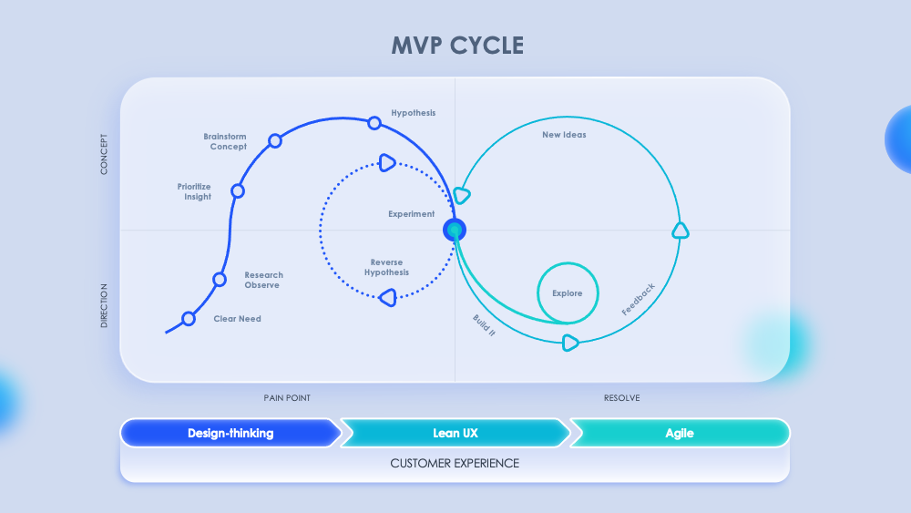

Minust

Tere! Olen Bogdan Viblyy, alustav ja kirglik tarkvaraarendaja. Mulle meeldib lahendada keerulisi probleeme, õppida uusi tehnoloogiaid ja luua kasulikke rakendusi.
Minu Oskused
Keeled, mida olen õppinud
- HTML & CSS
- C#
- PHP
- SQL
- JavaScript
- Python
Tehnoloogiad ja tööriistad
- Git & GitHub
- MySQL / MariaDB
- MS SQL Server
- Docker (algteadmised)
- Microsoft Office
- Oracle VirtualBox
Kursuse Ülesanded
Mis on MVP (Minimum Viable Product)?
MVP (minimaalselt elujõuline toode) on toote varaseim versioon, millel on vaid minimaalne, kuid piisav funktsionaalsus, et lahendada esimeste kasutajate põhiprobleem. MVP peamine eesmärk on saada reaalsetelt klientidelt tagasisidet minimaalsete ressursside ja ajakuluga. Kasutades MVP printsiipi, saan oma IT-projektides kiiresti ideid testida: loon esmalt projekti baasversiooni, kogun tagasisidet ja otsustan selle põhjal, milliseid funktsioone edasi arendada, vältides nii ebavajalikku tööd.
Kuidas luua remote repo ja mis käsud on vaja kasutada?
Kaughoidla (remote repository) loomine GitHubis ja selle ühendamine kohaliku projektiga on arendaja põhioskus. Siin on peamised sammud ja käsud:
- Loo uus repositoorium GitHub.com lehel.
- Projekti kaustas oma arvutis käivita käsk:
git init -b main - Ühenda lokaalne repo kaughoidlaga:
git remote add origin https://github.com/sinu-kasutaja/repo.git - Kontrolli ühendust:
git remote -v - Saada oma lokaalsed commit'id kaughoidlasse:
git push -u origin main
Minu Projektid
Siia on koondatud lingid minu parimatele projektidele ja portfooliotele.